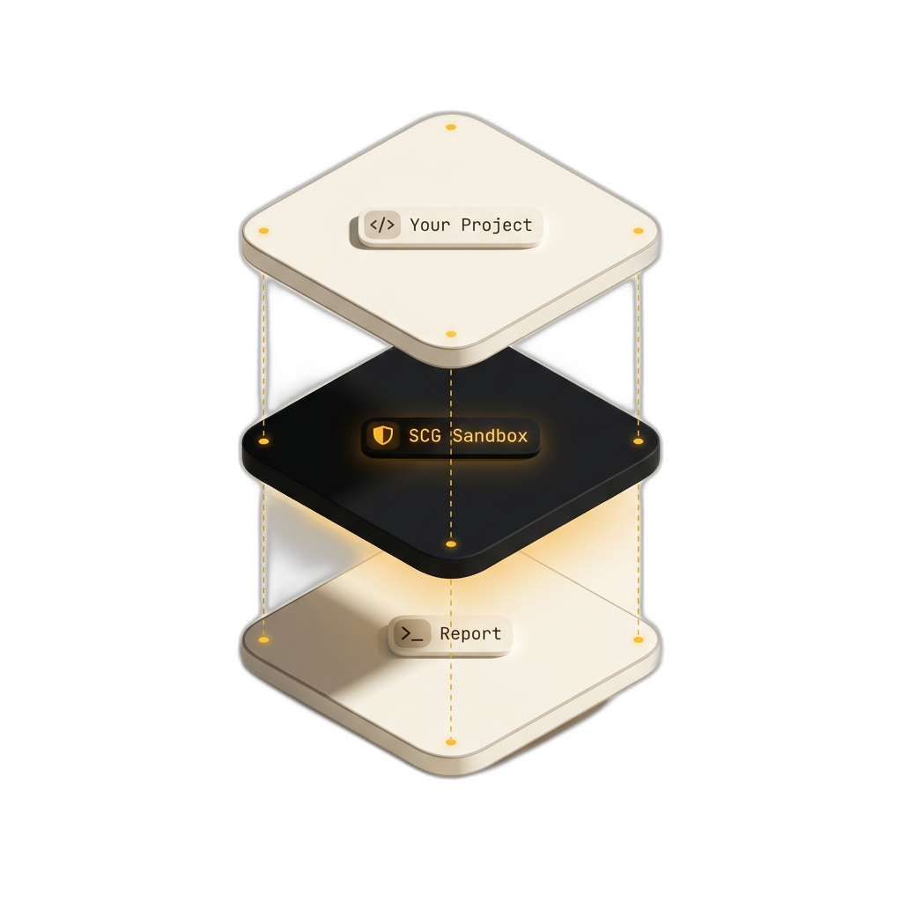
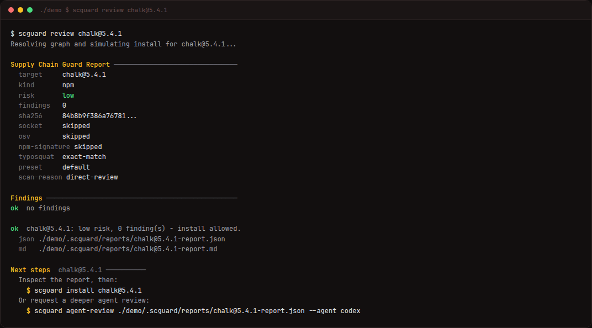

Local review · pre-install
Review before you install
Scan npm packages and VS Code extensions before they touch your machine. Lifecycle scripts, credential reads, payloads, Socket — all local.
- Blocks malicious scripts & hidden actions
- bun · npm · yarn · pnpm · VS Code
- Zero telemetry · sub-second scans
EARLY STAGE. Not a guarantee of safety — use as a local warning layer.
Threat surface
What it checks
Lifecycle
pre/post install hooks
Downloads
curl, wget, fetch
Filesystem
sensitive path access
Network
external hosts
Policy
licenses, CVEs, rules
Socket
optional score API
Pipeline
On-disk loop
No install until explicit approval.
- 01
Stage
Cache to
.scguard/ - 02
Scan
Heuristics + optional Socket
- 03
Decide
Approve or halt

Live feed
In motion

Interface
scguard installAgent-gated installscguard scan-vsixExtension scanscguard doctorDiagnosticsscguard shell-hookPM interception